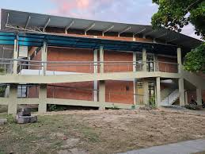
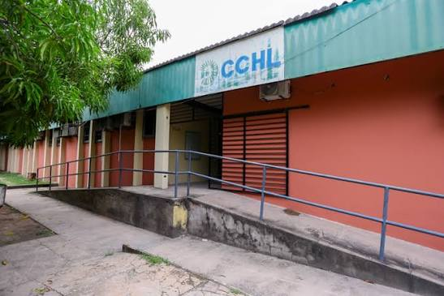
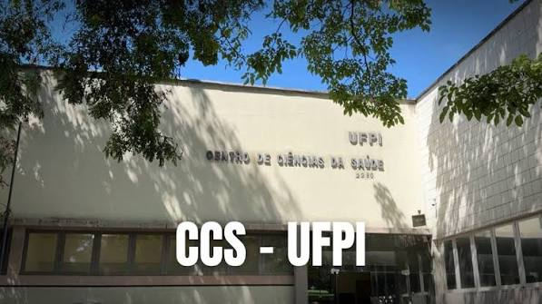
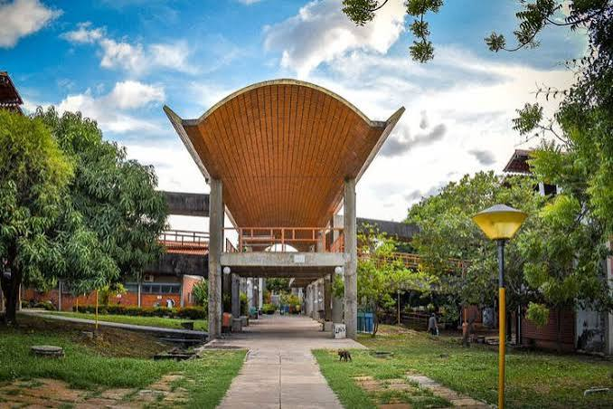

Aperte o botão abaixo para realizar sua matrícula caso tenha passado pelo processo seletivo.
Centros

CCN
Áreas de relacionadas as ciencias da natureza

CCHL
Áreas relacionadas as ciências humanas e linguisticas

CCS
Áreas relacionadas as ciências de Sáude

CT
Áreas relacionadas as ciências de tecnologias
"É fundamental preservar o caráter público dessas instituições e reconhecer seu papel estratégico na construção de um projeto de nação pautado na ciência, na tecnologia e na redução das desigualdades."
-Profa. Nadir Nogueira
Realize sua matrícula!
Aperte o botão abaixo para realizar sua matrícula caso tenha passado pelo processo seletivo.